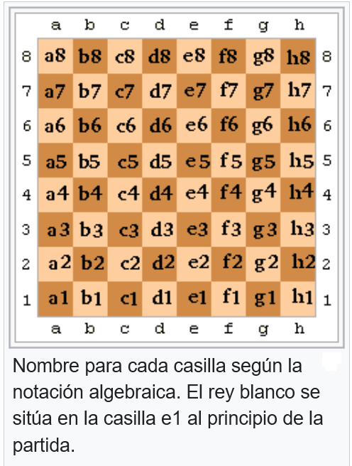

Generalidades de las Normas de Notación Ajedrecística
Existen varios sistemas de notación de partidas de ajedrez, cuyo
objetivo es registrar las partidas con propósitos documentales. El
sistema algebraico es el utilizado y recomendado por la FIDE. También
existen otros métodos, como la notación descriptiva (actualmente en
desuso), o el sistema de Forsyth-Edwards para anotar posiciones
particulares.

Las normas generales de la notación algebraica son:
-
Las filas del tablero se nombran con los números del 1 al 8. Al
principio de la partida, las piezas blancas ocuparán las filas 1 y 2
y las piezas negras las filas 7 y 8.
-
Las columnas del tablero se nombran con las letras minúsculas de la
‘a’ hasta la ‘h’, comenzando por la izquierda del jugador con piezas
blancas.
-
Las casillas reciben el nombre de la columna y la fila
correspondientes (e8, d5, c6, etc.).
-
Las piezas son designadas por su inicial, excepto el peón: R (Rey),
D (Dama), T (Torre), A (Alfil), C (Caballo).
-
Una jugada se escribe combinando la inicial de la pieza y la casilla
a la cual se mueve, excepto por el peón, del que se menciona solo la
casilla. Ejemplos:
- Ce4 significa que un caballo mueve a la casilla e4.
-
d5 representa la jugada de un peón de la columna d a la quinta
fila.
-
Una captura se indica con una x entre la inicial de la pieza (o la
columna del peón) y la casilla de la pieza capturada. Ejemplos:
- Txb5 indica que una torre captura una pieza en b5.
- dxe6 indica que el peón de la columna d captura en e6.
-
Si dos piezas iguales pueden ir a una misma casilla, se indica la
columna de la pieza que mueve; si ambas piezas están en la misma
columna, se indica la fila. Ejemplos:
-
Ced5 significa que, de entre dos caballos del mismo bando, el
ubicado en la columna e mueve a la casilla d5.
-
T3f6 significa que, de dos torres del mismo bando y situados en
la misma columna, la que está ubicada en la tercera fila mueve a
la casilla f6.
-
El jaque se indica con un signo ‘+’, y el jaque mate con ‘++’ (o
también ‘#’).
-
El enroque corto se anota como 0-0 y el enroque largo se anota como
0-0-0.
- Una captura al paso se indica con: a.p.
Algunos símbolos utilizados para comentar partidas son:
- !: Buena jugada
- !!: Jugada brillante (muy buena)
- ?: Mala jugada
- ??: Muy mala jugada
- !?: Jugada interesante
- ?!: Jugada dudosa
- ±: Ventaja blanca
- +/= o ±: Ligera ventaja blanca
- +–: Ventaja ganadora blanca
- –/+ o ∓ (símbolo ± invertido): Ventaja negra
- =/+: Ligera ventaja negra
- –+: Ventaja ganadora negra
- ∞: Posición incierta